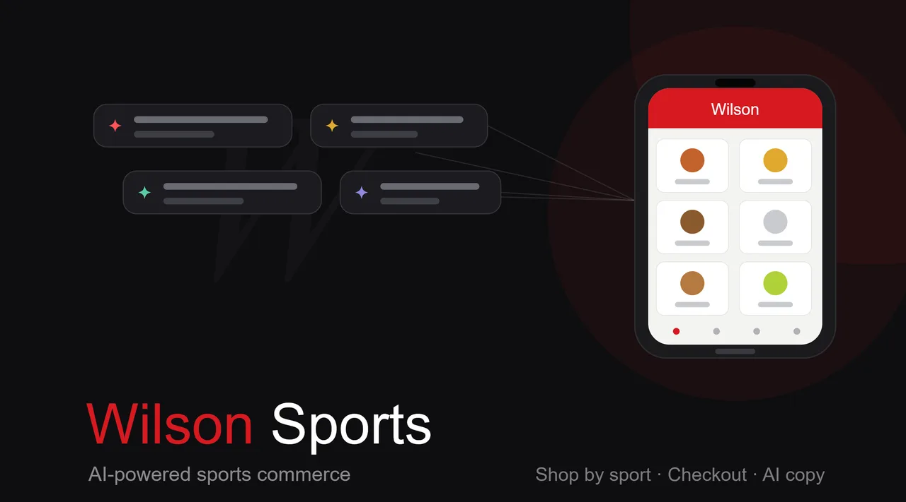

UX Design & Testing
Wilson
A UX design and usability case study for a Wilson sports mobile app, connecting gear, play, and improvement in one place.

The problem
Sports brands often separate the product from the player journey, so engagement ends at purchase. I explored how a mobile app could keep athletes connected to their gear, their progress, and the brand beyond the transaction.
Who it's for
I centered the work on recreational and aspiring competitive athletes who care about both equipment and improvement. The aim was an experience that felt useful to a weekend player and a serious one alike.
Research & discovery
My approach was to define the core jobs an athlete-facing app should serve, then test concept and structure against them. I explored navigation and feature priority through usability sessions to see what genuinely earned a place on screen.
The design
I focused on a clear information architecture and a few well-defined entry points rather than a crowded feature set. Each decision aimed to make the most-used actions fast and the value of the app obvious on first open.
What I'd measure
I would treat repeat engagement and task-success in usability testing as my primary signals, plus completion rates on key flows. I would also gather qualitative feedback on whether the app felt worth returning to.